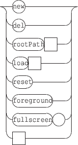
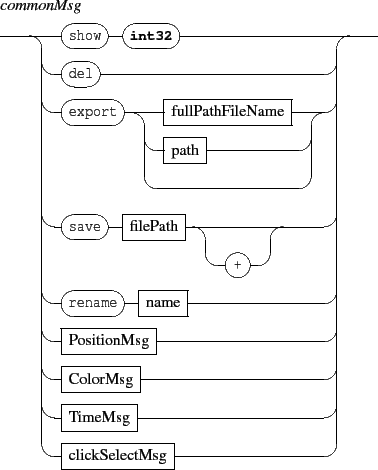

Next: 4.1.2 Relative positioning
Up: 4.1 Positioning
Previous: 4.1 Positioning
Contents
Index

- x y: moves the x or y coordinate of a component. By default, components are centered on their x, y coordinates. The coordinates space range is [-1,1].
For a scene component, -1 is the leftmost or topmost position, 1 is the rightmost or bottommost position. [0,0] represents the center of the scene.
For the scene itself, it moves the window in the screen space and the coordinate space is orthonormal, based on the screen lowest dimension (i.e. with a 4:3 screen, y=-1 and y=1 are respectively the exact top and bottom of the screen, but neither x=-1 nor x=1are the exact left and right of the screen).
Default coordinates are [0,0].
- z: sets the z order of a component. The range is . z order is actually relative to the scene components: objects of high z order will be drawn on top of components with a lower z order. Components sharing the same z order will be drawn in an undefined order, although the order will stay the same for as long as they live.
Default z order is 0.
- angle: sets the angle value of a component, which is used to rotate it around its center. The angle is measured in clockwise degrees from the x axis.
Default angle value is 0.
- scale: reduce/enlarge a component. The range is . Default scale is 1.
Next: 4.1.2 Relative positioning
Up: 4.1 Positioning
Previous: 4.1 Positioning
Contents
Index
Grame - Interlude project [ANR-08-CORD-010]